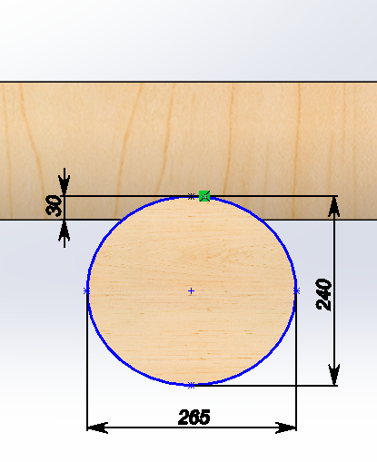

Date
11.01.2025
Mēs izveidojām sola 3D modeli, izmantojot datorprogrammu SolidWorks. Darbu sākām ar skices (sketch) veidošanu, izmantojot funkciju "Sketch". Pirmkārt, uzzīmējām viena koka dēļa profilu – to izmantojām gan sēžamajai daļai, gan atzveltnei. Lai izveidotu šo detaļu, izmantojām "Rectangle" un "Smart Dimension", lai piešķirtu precīzus izmērus. Kad skice bija pabeigta, mēs pielietojām funkciju "Extruded Boss/Base", lai padarītu skici trīsdimensiju. Noteicām nepieciešamo biezumu katram dēlim. Pēc tam šo pašu elementu kopējām, lai izveidotu vairākus vienādus dēļus sēžamajai daļai un atzveltnei, izmantojot "Linear Pattern" vai "Copy with Mates" funkciju. Pēc tam veidojām metāla kājas, sākot ar jaunu detaļu (new part). Uzzīmējām vienas kājas sānskatu un izvelkām to ar "Extrude". Lai padarītu modeli ticamāku un līdzīgāku reālajam solam, izmantojām arī funkciju "Fillet", lai pievienotu noapaļojumus. Kad visas detaļas bija gatavas, mēs tās salikām kopā, izmantojot "Assembly" vidi. Ar "Mate" funkciju pievienojām nepieciešamos piesaistes punktus, lai visi dēļi un kājas atrastos pareizajā vietā.
Sola datormodelēšana Sols izometrijā

Sola datormodelēšana Kreisā sola balsta un Labais sola balsts montāžas rasējums